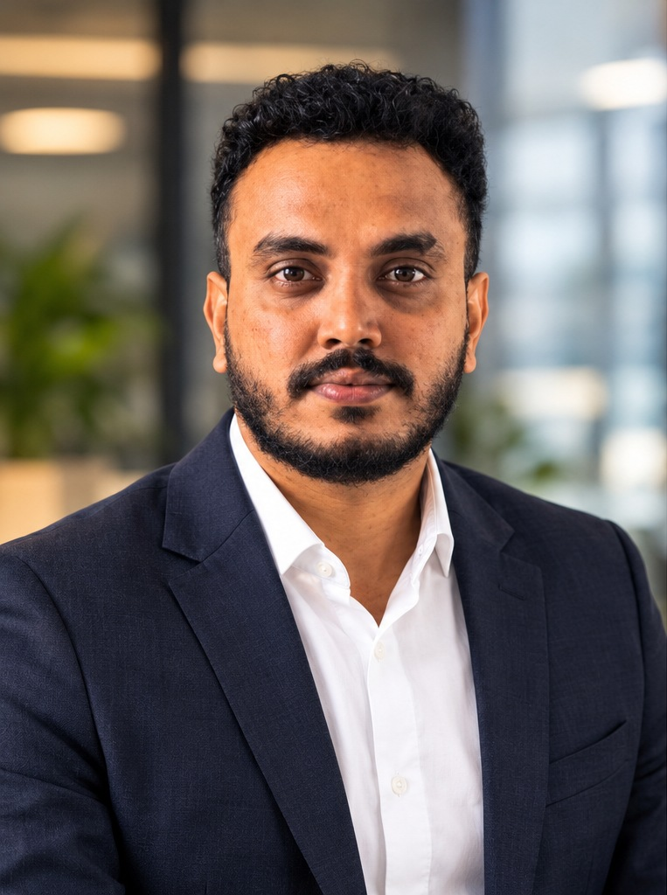
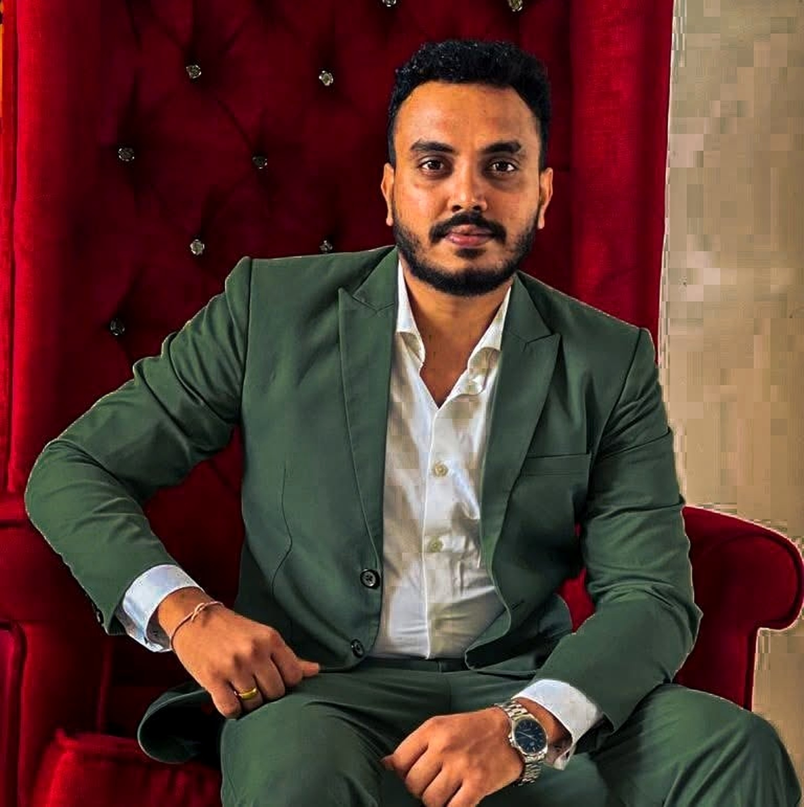
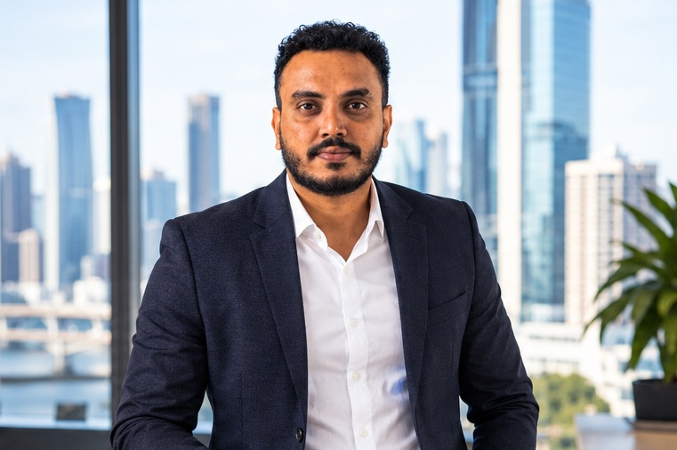
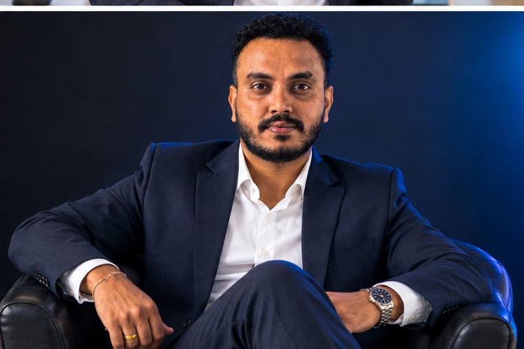

Problem solving
Calm, analytical approach to resolving operational and technical issues.
Hello, I'm
A practical, customer-focused professional bringing together healthcare supply operations and 7+ years of database administration experience. I enjoy solving problems, supporting people and keeping essential services running smoothly.

I’m a dedicated professional with experience across healthcare supply operations and enterprise database environments.
In my current role as a Senior Supply Officer with Queensland Health, I support the flow of medical supplies through ordering, scanning, requisition processing and procurement using SAP. I value accuracy, clear communication and teamwork because dependable supply operations make a real difference to frontline services.
Alongside this, I bring more than seven years of Oracle database experience, including administration, performance optimisation, backup and recovery, cloud platforms and production support.
Calm, analytical approach to resolving operational and technical issues.
Clear communication and a customer-focused working style.
Collaborative, dependable and comfortable working with diverse teams.
Motivated to build knowledge and improve the way work gets done.
A blend of supply-chain operations, database technology and people skills.
Experience levels are descriptive, not formal proficiency ratings.
Queensland Health · Queensland, Australia
Australian logistics & healthcare clients
CodeGen International Pvt Ltd
Onsys Technologies
Softline Technologies
University of Sri Jayewardenepura · Sri Lanka
Certification 1Z0-931-22
Oracle Cloud Infrastructure
Oracle Database certification
Oracle Autonomous Database
Microsoft Office suite
Portrait variations prepared from my supplied photo.



I’d be happy to connect, share my experience and explore how I can contribute to your team.